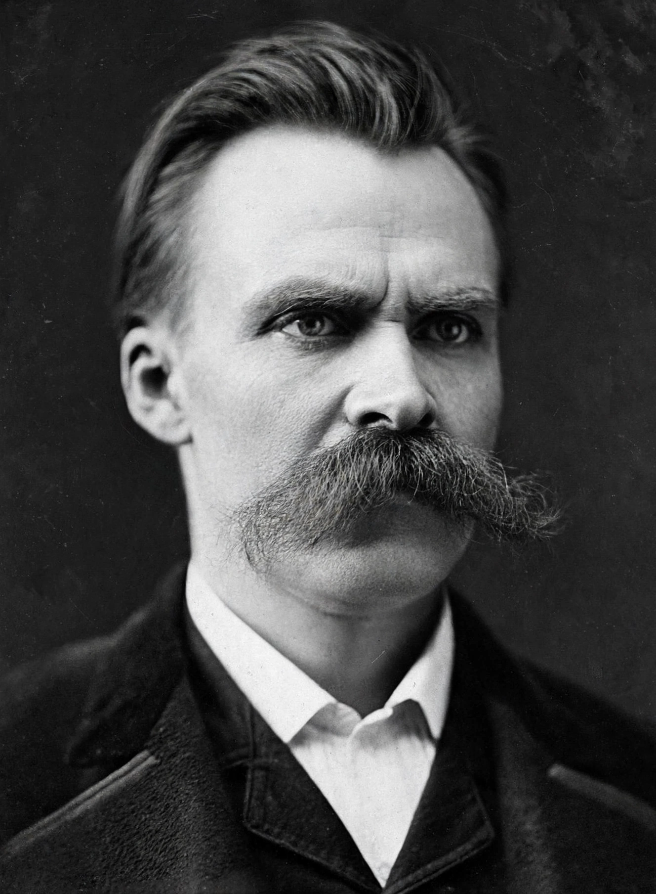

From Wikipedia, the free encyclopedia
| Friedrich Nietzsche | |
|---|---|
| Born | 15 October 1844, Röcken, Prussia |
| Died | 25 August 1900, Weimar, Germany |
| Era | 19th-century philosophy |
| Main interests | Ethics, aesthetics, religion, culture |
| Notable works | The Birth of Tragedy (1872); Thus Spoke Zarathustra (1883–85); Beyond Good and Evil (1886); On the Genealogy of Morality (1887) |
| Notable ideas | Death of God; Übermensch; eternal recurrence; master–slave morality; Apollonian and Dionysian |

Friedrich Wilhelm Nietzsche (1844–1900) was a German philosopher and classical philologist whose critiques of religion, morality and modern culture made him one of the most influential — and most contested — thinkers of the modern age. He proclaimed the 'death of God', dissected 'slave morality', and proposed ideals such as the Übermensch and eternal recurrence in aphoristic, poetic prose.
Appointed a professor at Basel at only 24, Nietzsche published The Birth of Tragedy (1872), distinguishing the Apollonian (form, reason) from the Dionysian (ecstasy, instinct) in Greek culture. Ill health forced his resignation in 1879; a decade of itinerant writing in Switzerland and Italy produced Thus Spoke Zarathustra, Beyond Good and Evil and On the Genealogy of Morality. In January 1889 he suffered a mental collapse in Turin and lived in care, latterly of his sister Elisabeth, until his death in 1900.
Nietzsche's genealogy traces Christian morality to ressentiment — the weak revaluing the values of the strong as 'evil'. His perspectivism denies view-from-nowhere truth, and his call to 'revalue all values' influenced existentialism, postmodernism and the arts. His sister's editing and Nazi appropriation long distorted his reputation; he in fact despised antisemitism and German nationalism, and post-war scholarship (notably Walter Kaufmann) restored a more accurate picture.